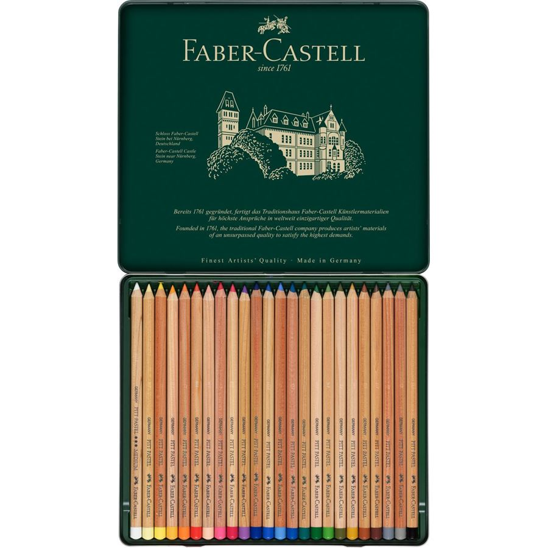
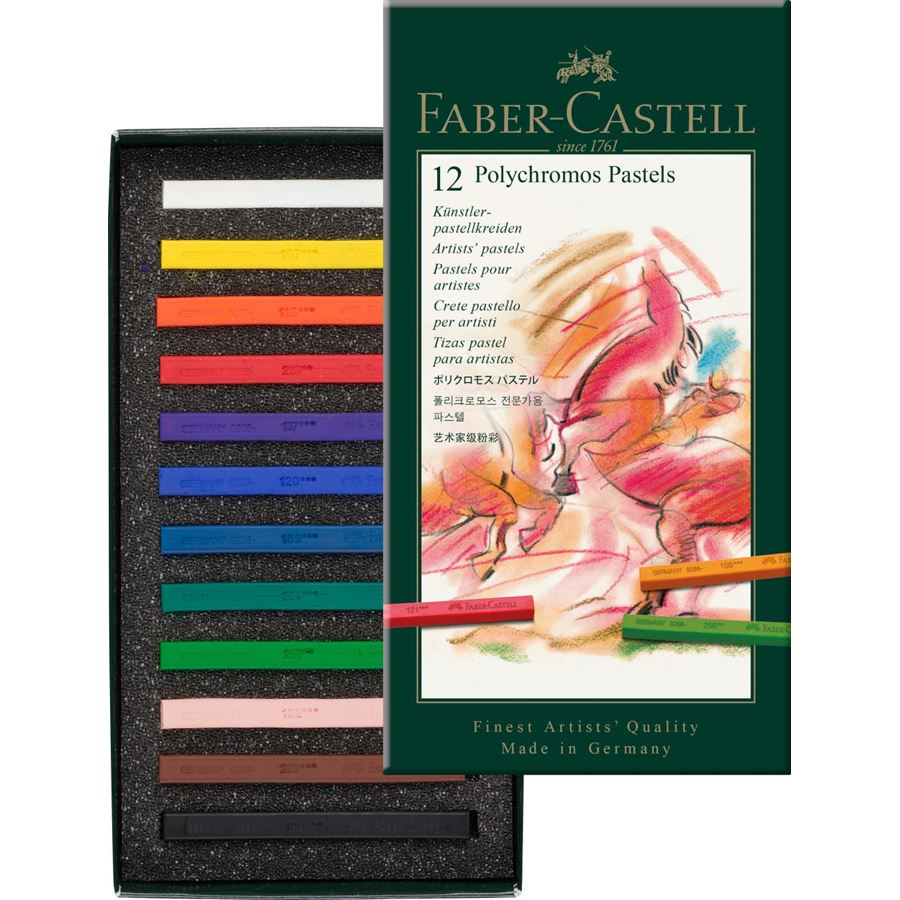
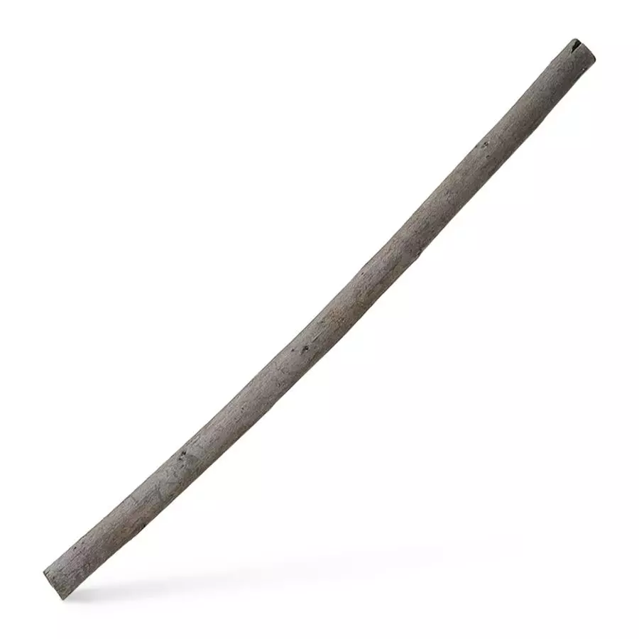

BELLAS ARTES
Volver a Inicio
Lápices de grafito negro
Juego de 6 lápices Castell 9000
El Castell 9000 - el genuino lápiz clásico - fue lanzado por el Conde Alexander von Faber-Castell en 1905. Su calidad y variedad de graduaciones le han convertido en el favorito de ilustradores y artistas. Su mina encolada en toda la longitud del lápiz es especialmente resistente a la rotura. El Castell 9000 está disponible en 16 grados de dureza, convirtiéndose en el lápiz perfecto para aplicaciones técnicas y artísticas.
Detalles del producto
- 6 lápices de la máxima calidad con los grados de dureza HB, B, 2B, 4B, 6B y 8B
- Ideal para trabajos artísticos, esbozos y bocetos de gran calidad
- Barniz al agua respetuoso con el medio ambiente
- Disponible de manera independiente y en diferentes tipos de estuche
Juego de Dibujo con 12 lápices Castell 9000, 8B-2H
El Castell 9000 - el genuino lápiz clásico - fue lanzado por el Conde Alexander von Faber-Castell en 1905. Su calidad y variedad de graduaciones le han convertido en el favorito de ilustradores y artistas. Su mina encolada en toda la longitud del lápiz es especialmente resistente a la rotura. El Castell 9000 está disponible en 16 grados de dureza, convirtiéndose en el lápiz perfecto para aplicaciones técnicas y artísticas.
Detalles del producto
- 12 lápices de la máxima calidad en diferentes grados de dureza 8B-2H
- Ideal para trabajos artísticos, esbozos y bocetos de gran calidad
- Especialmente resistente a las roturas, fácil de borrar, se le saca punta fácilmente
- Barniz al agua respetuoso con el medio ambiente
- Disponible de manera independiente y en diferentes tipos de estuche
Volver a Productos
Lápices de colores
Estuche de madera con 72 lápices acuarelables Albrecht Dürer
Los ecolápices acuarelables Albrecht Dürer ofrecen a los artistas grandes posibilidades de expresión al trabajar con acuarelas. Materiales de alta calidad combinados con más de 250 años de experiencia han generado unos lápices acuarelables que producen inigualables efectos de acuarela de extraordinaria intensidad. La superficie de color se transforma con solo aplicar unas pinceladas que revelan el complejo y único poder del color. Dependiendo del papel utilizado, los pigmentos pueden disolverse por completo y comportarse como acuarelas clásicas.
Detalles del producto
- Pigmentos de alta calidad con resistencia a la acción de la luz y luminosidad de color insuperables
- Trazo suave de colorido intenso
- Mina completamente acuarelable
- Mina de 3,8 mm de grosor
- Gran resistencia a la rotura gracias a un encolado elástico entre mina y madera
- Estuche de madera con 72 piezas
- Disponible de manera independiente o en diferentes tipos de estuche
Estuche de metal con 24 lápices pastel Pitt

Los ecolápices pastel Pitt contienen un alto porcentaje de pigmentos y no incluyen ni aceites ni ceras. Perfectos para concretar detalles - como las tizas pastel Polychromos -, se pueden difuminar para crear finas transiciones de color, siendo el complemento perfecto a las tizas pastel.Solo se requiere una mínima fijación para que el dibujo mantenga su intensidad de color.
Detalles del producto
- Lápiz pastel para artistas
- Pigmentos de alta calidad con resistencia a la acción de la luz y luminosidad de color insuperables
- Trazo de colorido intenso
- Se borra muy bien
- Mina de 4,3 mm de grosor
- El color se mantiene con fijadores
- Estuche de metal con 24 piezas
Volver a Productos
Rotuladores
Estuche con 4 rotuladores Pitt Artist Pen, sepia oscuro
Los dibujos a tinta cuentan con una gran tradición artística. Han sido siempre un medio interesante para artistas y diseñadores gráficos, ya que ofrecen expresión y durabilidad a los dibujos y pueden combinarse con otras técnicas de dibujo. Faber-Castell ha combinado las ventajas de la tinta para artistas con los beneficios de un rotulador moderno y fácil de usar - el rotulador Pitt. La tinta pigmentada súper resistente a la luz es ideal para bocetos, dibujos, layouts, diseño de moda e ilustración.
Detalles del producto
- Tinta pigmentada
- Máxima resistencia a la acción de la luz
- Resistente al agua, permanente
- Inodora, sin ácidos, pH neutro
- No atraviesa el papel
- Estuche con 4 unidades
- Contenido: S = 0,3 mm, F = 0,5 mm, M = 0,7 mm, B = punta de pincel
- Color 175 sepia oscuro
- Disponible de manera independiente y en diferentes tipos de estuche
Estuche con 4 rotuladores Pitt Artist Pen, sanguina
Los dibujos a tinta cuentan con una gran tradición artística. Han sido siempre un medio interesante para artistas y diseñadores gráficos, ya que ofrecen expresión y durabilidad a los dibujos y pueden combinarse con otras técnicas de dibujo. Faber-Castell ha combinado las ventajas de la tinta para artistas con los beneficios de un rotulador moderno y fácil de usar - el rotulador Pitt. La tinta pigmentada súper resistente a la luz es ideal para bocetos, dibujos, layouts, diseño de moda e ilustración.
Detalles del producto
- Tinta pigmentada
- Máxima resistencia a la acción de la luz
- Resistente al agua, permanente
- Inodora, sin ácidos, pH neutro
- No atraviesa el papel
- Estuche con 4 unidades
- Contenido: S = 0,3 mm, F = 0,5 mm, M = 0,7 mm, B = punta de pincel
- Color 188 sanguina
- Disponible de manera independiente y en diferentes tipos de estuche
Volver a Productos
Ceras
Estuche de cartón con 12 tizas pastel Polychromos

Las tizas pastel Polychromos contienen un alto porcentaje de pigmentos y no incluyen ni aceites ni ceras. Las tizas se pueden difuminar para crear finas transiciones de color. Más duras que las tizas pastel, las tizas Polychromos son especiales para dibujar. Los pasteles Polychromos se caracterizan por su consistencia, economía y excelente adherencia a papel, cartón, piedra y madera. Solo se requiere una mínima fijación para que el dibujo mantenga su intensidad de color.
Detalles del producto
- Tiza pastel para artistas
- Pigmentos de alta calidad con resistencia a la acción de la luz y luminosidad de color insuperables
- Se borra muy bien
- La forma cuadrada es ideal para trabajos bidimensionales y muy detallados
- El color se mantiene con fijadores
- Estuche con 12 unidades
Tiza Pitt, blanco
Los colores monochrome clásicos - negro, blanco, sanguina y sepia - pueden encontrarse a diario en casi cualquier clase de arte, ya que hacen que los dibujos cobren vida con vitalidad y expresión. Esta antigua tradición de dibujo figurativo se retrotrae al Renacimiento, acentuado con blancos y sombras oscurecidas con negro. Las tizas Pitt monochrome también se remontan a la larga tradición del dibujo figurativo, razón por la cual las tizas especiales para abocetar son más duras que las tizas pastel convencionales. Por este motivo, las líneas no desaparecen por completo cuando se difuminan. Las tizas sepia y sanguina se complementan con los lápices de dibujo grasos y no grasos para realizar bocetos y concretar detalles.
Detalles del producto
- Tizas pastel Pitt Monochrome de la máxima calidad
- Máxima resistencia a la acción de la luz
- No graso
- Se borra con facilidad
- Ideal para trabajos en gran formato y detalles gráficos
- Color 101 blanco
- Disponible de manera independiente y en diferentes tipos de estuche
Volver a Productos
Carbón Vegetal
Carbón vegetal Pitt, 5-8 mm

Las barras de carbón natural son el más antiguo material del mundo para dibujar y realizar bocetos. La sombra gris-azulada se desliza suavemente por el papel, se emborrona y difumina con facilidad, se borra sin dificultad y admite superposiciones. Su tono azulado siempre ha causado admiración, incluso entre los maestros de la vieja escuela. Los lápices carbón permiten trazar líneas mucho más negras. El carbón mezclado con hollín y arcilla otorga a los lápices carbón su color negro intenso pudiendo fabricarse en distintas graduaciones.
Detalles del producto
- Carboncillo natural Pitt de Ø 5-8 mm
- No graso
- Trazo negro-azulado
- Disponible de manera independiente y en diferentes tipos de estuche
Tiza carbón Pitt, no graso, blando

Las barras de carbón natural son el más antiguo material del mundo para dibujar y realizar bocetos. La sombra gris-azulada se desliza suavemente por el papel, se emborrona y difumina con facilidad, se borra sin dificultad y admite superposiciones. Su tono azulado siempre ha causado admiración, incluso entre los maestros de la vieja escuela. Los lápices carbón permiten trazar líneas mucho más negras. El carbón mezclado con hollín y arcilla otorga a los lápices carbón su color negro intenso pudiendo fabricarse en distintas graduaciones.
Detalles del producto
- Tiza carbón Pitt de la máxima calidad
- No graso
- El negro más intenso
- Abrasión muy baja
- Grado de dureza: blando
- Disponible de manera independiente y en diferentes tipos de estuche
Volver a Productos
Ir Arriba
| Sucursal Argentina |
| A.W. Faber-Castell Argentina S.A. |
| Provincia de Buenos Aires |
| Partido de tres de febrero |
| BME. Hidalgo 1920/80 |
| (1682) Jose Maria Bosch |
| Phone: (0054) 11 4751 8888 |
| Fax: (0054) 11 4758 9935 |
| info@faber-castell.com.ar |